絵画の中に鳴っていたであろう音風景を、作曲によって立ち上げる
全盲の友人と作品を鑑賞した経験をきっかけに、絵画を音に読み替える「作曲実践」を続けている。
金子淳平 ／ 100BANCH GARAGE Program ／ MEETUP 2026.10.1
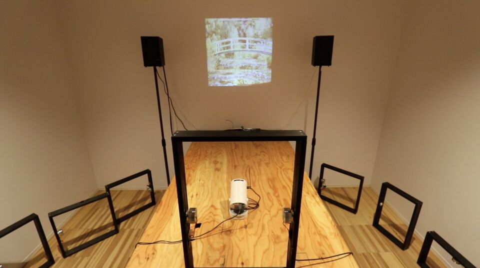
- 2026.05ASIBA DEMO DAY：インスタレーション発表
- 2026.06美学校：ワークショップ「聴く絵画をつくる」
- 2026.07100BANCH：「気配に触れる」「ミキキの交差点」
- 2026.07八王子：東京都盲人福祉協会での鑑賞会
- 2026.07o-i studio：「線を聴く」
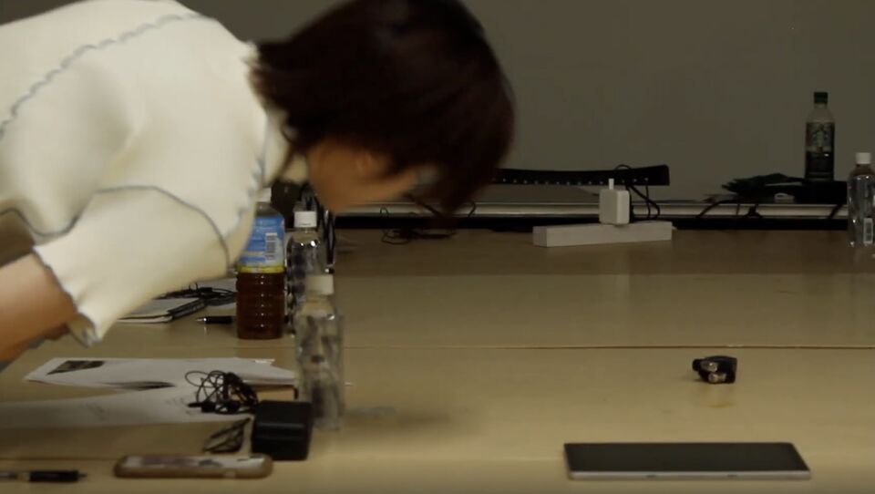
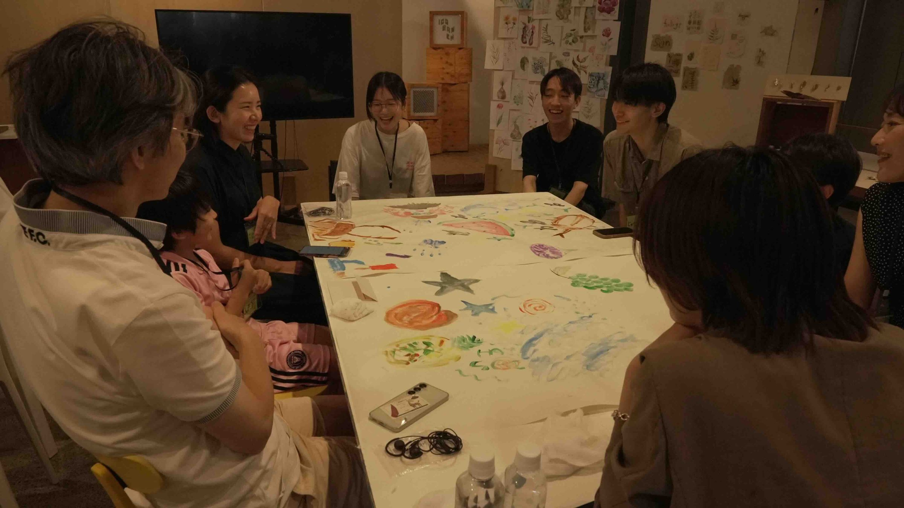
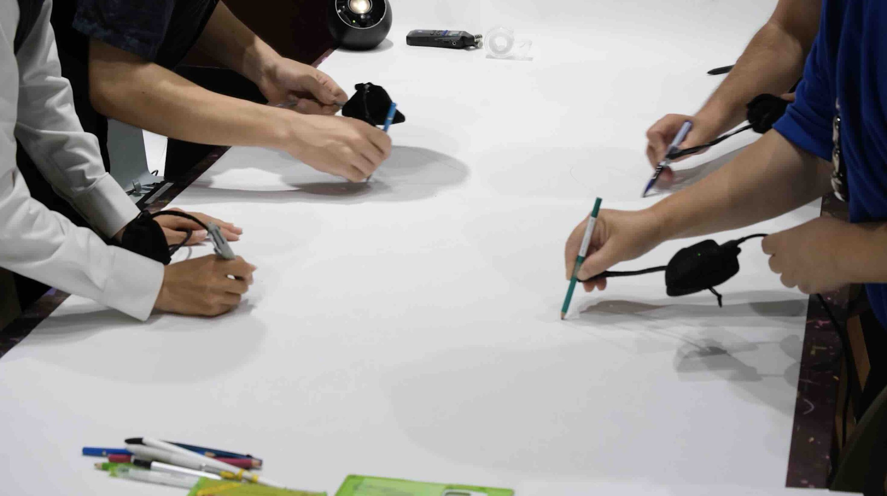
学会発表と、初めての個展。
論文発表
絵画を音で拡張する試みを検証した学術論文と解説パネル。木枠の没入展示とWebアプリを使ったワークショップを行い、音や振動が加わることで絵の奥行きがどう伝わり、言葉だけに頼らない対話がどう生まれるかを実証的に分析した。
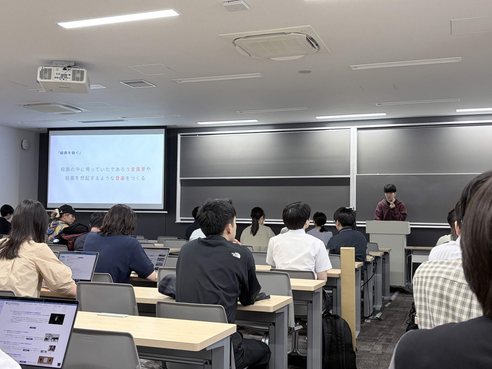
images/conference-01.jpg
学会発表の様子
これまでの実践を4つの章で紹介した、初めての個展。
- 会期
- 2026.9.19 SAT – 9.23 WED 11:00–19:00
- 会場
- GALLERY工+WITH（新高円寺駅徒歩3分）
会期中5日間、毎日ライブセッションを開催。電子音響、工芸、VJ、カリンバ、フィールドレコーディングなど、その都度異なる領域のアーティストと共に。
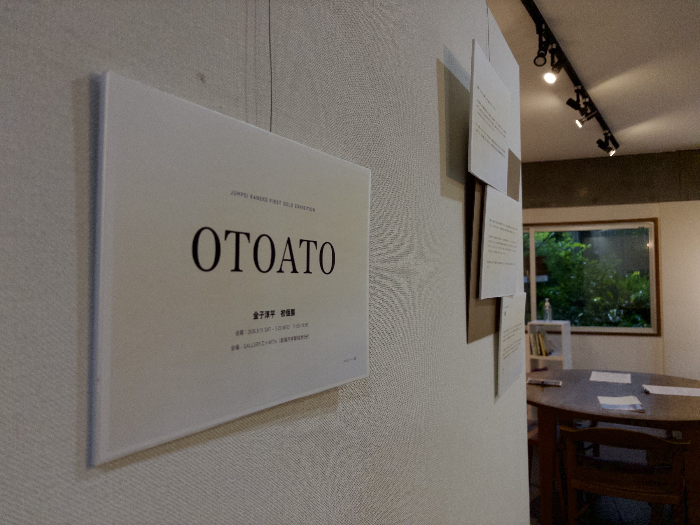
images/view-01.jpg
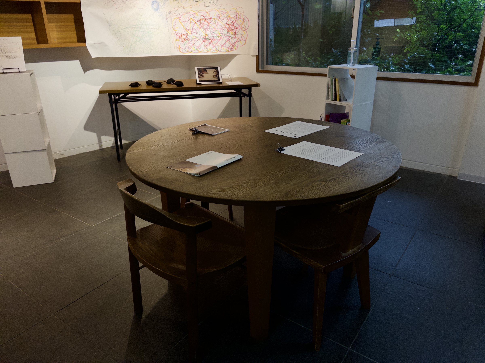
images/view-02.jpg
絵の中に鳴っていたかもしれない音の風景を立ち上げ、視覚や言葉だけに頼らずに作品の世界へ入り込むための試み。全盲の友人と美術館へ行った経験がきっかけだった。
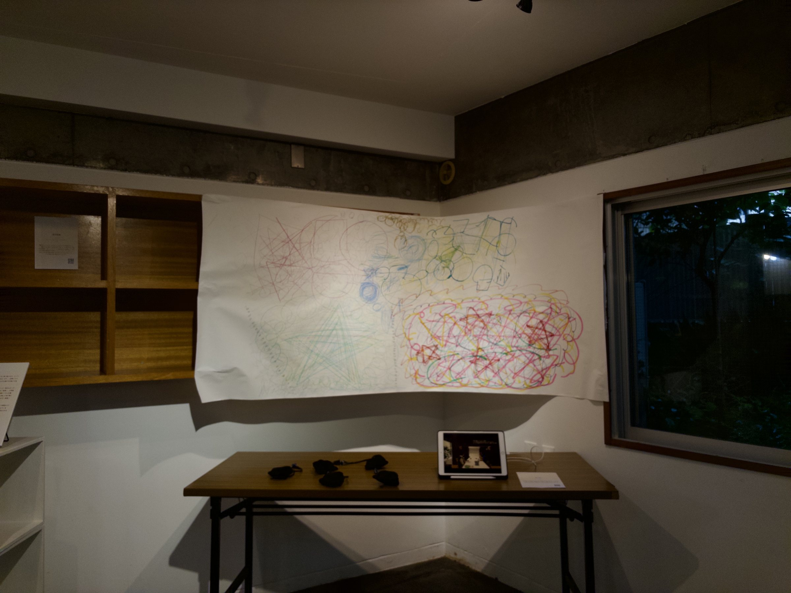
images/view-03.jpg
CHAPTER I 絵画を聴く 展示風景
他者との関わりや、その場の時間を音に変換しながら共有してきた、ワークショップやセッションの実践をまとめた章。
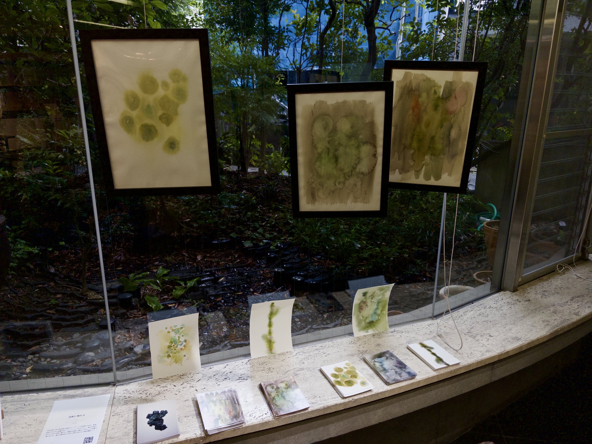
images/chapter-02.jpg
CHAPTER II 関係性 展示風景
「残るもの（データ）」に、もう一度「消えるもの（現象）」や「朽ちるもの（物質）」の感覚を取り戻せないかと考えた作品群。
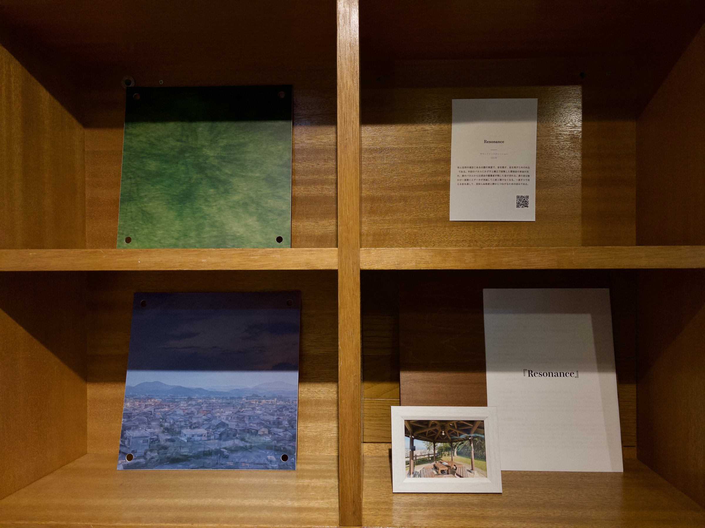
images/chapter-03.jpg
CHAPTER III 情報とエモーション 展示風景
大学3年生の夏、音の金子淳平と建築の鏡理吾の2人で、高島平団地の一室に1週間滞在。その記録と対話、循環のモデルを1冊のZINEとして書き上げた。
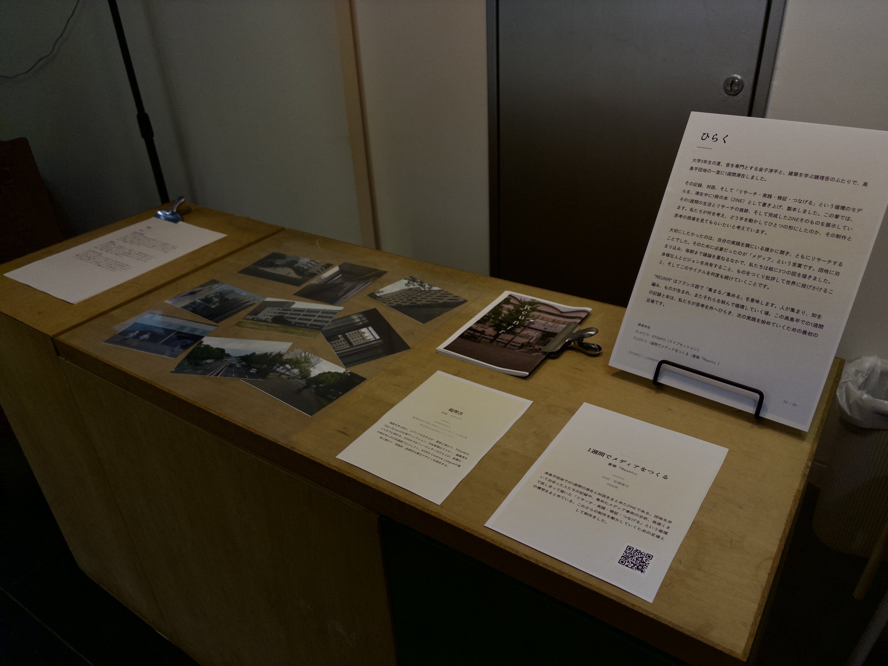
images/chapter-04.jpg
CHAPTER IV ひらく 展示風景
会期中5日間、毎日ライブセッションを開催。電子音響、工芸、VJ、カリンバ、フィールドレコーディングなど、その都度異なる領域のアーティストと共に。
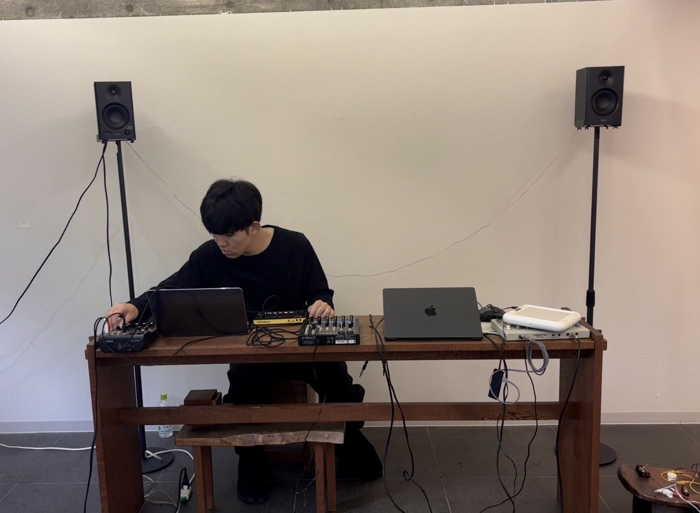
images/OTOATO.jpg
セッションの様子
新たな美術館の音声ガイドを試作し、検証する。
専用のデバイスを持って絵画作品に近づくと、音声ガイドが自動で再生される体験をつくる。
これまでの木枠と距離センサーの作品から、実際の美術館に導入できる形へ進める。
11月28日(土)（仮）に、100BANCHで鑑賞会を予定です。
体験後にアンケートとヒアリングを行います。
ぜひお越しください。
得られた知見を、インタラクション2027での発表に向けてまとめる。